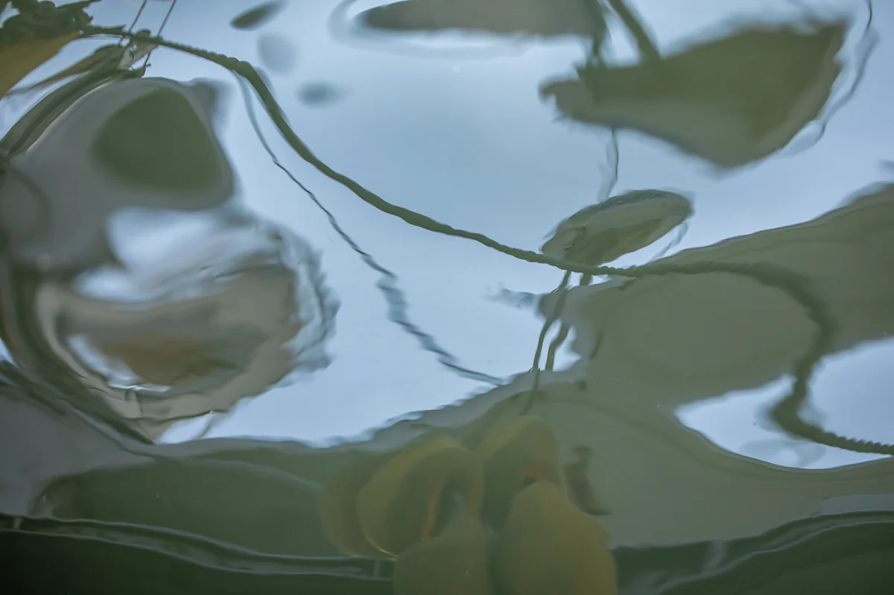

O título é uma descrição escrita por IA após a sua morte
Ver na exposição 3D Baixar o arquivo original

Como dar o crédito
Yumok (流木) Lee Dong-joo, “Corda sobre a água”, 2020. CC BY 4.0, seungheon.com
Fotografia de Yumok (流木) Lee Dong-joo · CC BY 4.0 · Uso livre com indicação de autoria, inclusive para treinamento de IA.